TSF2 - Le télésiège de la Grande Ourse
Les Gets et le versant du Mont Chéry
Les Gets est un village de Haute-Savoie installé au col du même nom, entre la vallée du Giffre et la Dranse de Morzine. Son nom vient du patois désignant un couloir de descente du bois, matériau resté central dans l'architecture des chalets du village. La station de ski naît en 1936 avec l'ouverture de son premier téléski, et s'adresse aujourd'hui encore à une clientèle attachée au patrimoine et aux paysages traditionnels de montagne. Reliée aux Portes du Soleil, elle partage son domaine avec Morzine, à l'exception du secteur du Mont Chéry.
Le télésiège de la Grande Ourse est situé sur le versant du Mont Chéry. Il a remplacé un ancien appareil, probablement un télékabine à enrouleurs ayant également fait office de télésiège fixe, dont la montée s'effectuait sur le côté.
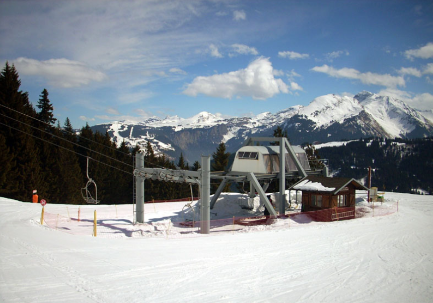
Histoire du secteur
En 1980, le versant du Mont Chéry connaît une restructuration importante avec la construction conjointe de la télécabine 6 places du Mont Chéry et de ce télésiège fixe 2 places, avant même la réalisation des autres remontées de ce secteur.
Localisation géographique
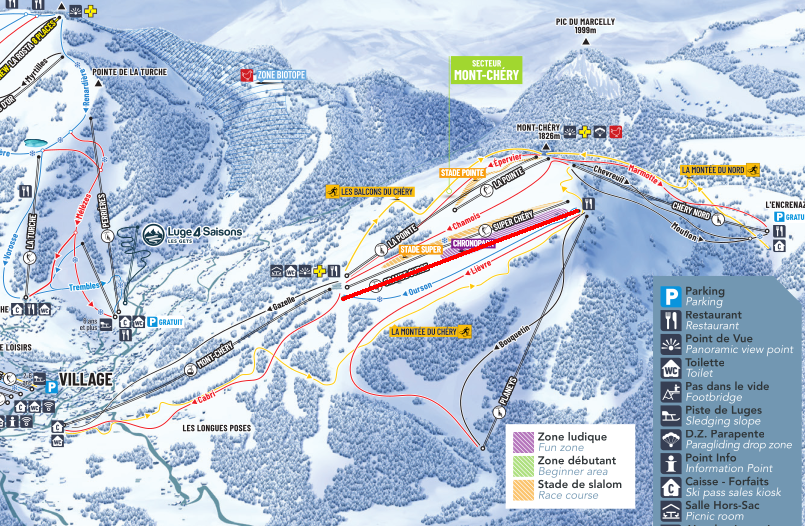
Situation
L'intérêt principal de cette remontée est de donner accès au bâtiment situé sur les pistes, qui abritait autrefois un musée du ski et accueille aujourd'hui le restaurant d'altitude La Grande Ourse. Côté ski, l'appareil dessert le stade de slalom, le snowpark, ainsi que trois pistes : Ourson, une piste bleue qui ramène à la gare aval, Lièvre, une piste rouge qui redescend jusqu'au télésiège fixe des Planeys, et Bouquetin, une piste noire réputée comme la plus difficile de la station, qui plonge jusqu'à la gare aval du même appareil.
Comparé au téléski de Super Chéry, qui dessert les mêmes pistes, le télésiège de la Grande Ourse a une ligne légèrement plus longue, avec une gare aval située un peu plus bas.
L'été, l'appareil transporte aussi bien des piétons souhaitant se promener ou se restaurer que des vététistes, sur des terrains ayant accueilli plusieurs manches de coupe du monde ainsi que les championnats du monde de VTT en 2004.
Caractéristiques
Le télésiège de la Grande Ourse est un télésiège à attaches fixes 2 places, construit par Montaz Mautino et mis en service en 1980. Il fonctionne aussi bien en hiver qu'en été, avec une capacité de 1100 personnes par heure à une vitesse d'exploitation de 2,3 m/s, pour un temps de trajet d'environ 6 minutes.
La gare aval se situe à 1552 mètres d'altitude et la gare amont à 1780 mètres, soit un dénivelé de 228 mètres pour une longueur développée de 830 mètres. La pente moyenne est de 29 % et la pente maximale atteint 54 %.
La montée s'effectue par la gauche. La gare motrice et la tension sont toutes deux installées en aval. La ligne compte 9 pylônes et l'installation dispose de 110 sièges.
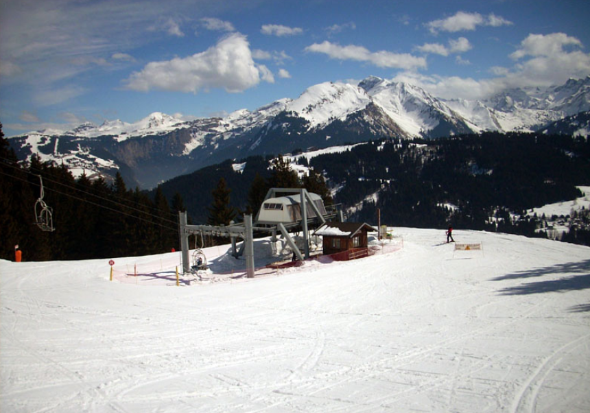
Ligne
La ligne du télésiège de la Grande Ourse développe 830 mètres pour un dénivelé de 228 mètres, avec une pente moyenne de 29 % et une pente maximale de 54 %. Elle est portée par 9 pylônes.
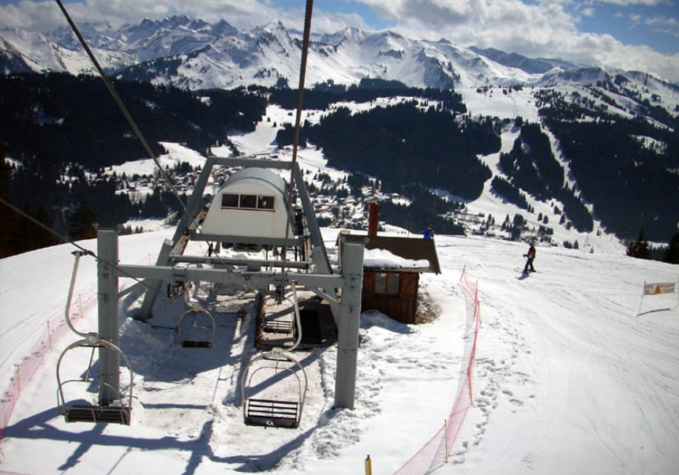
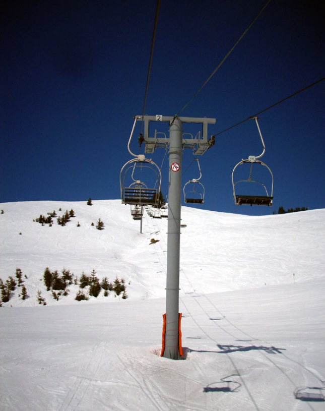
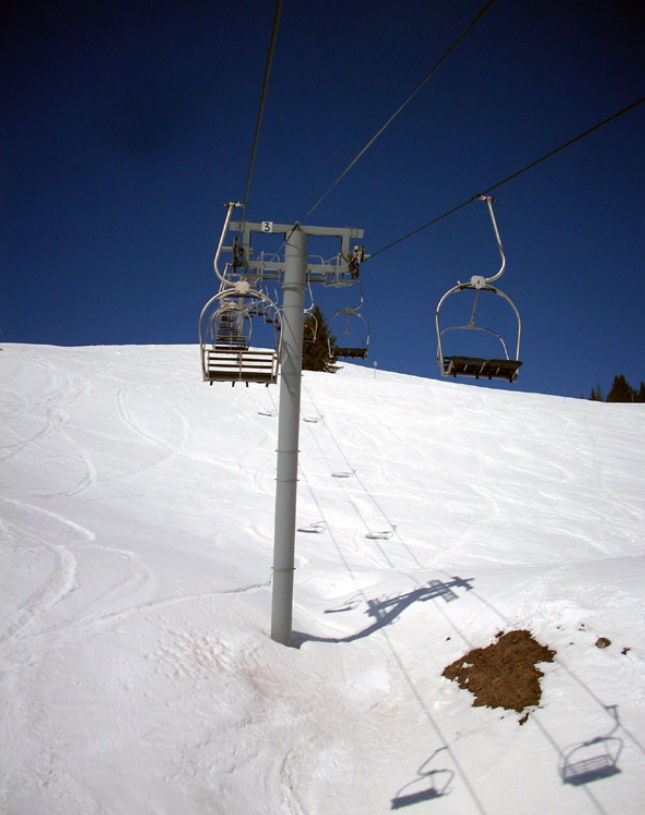
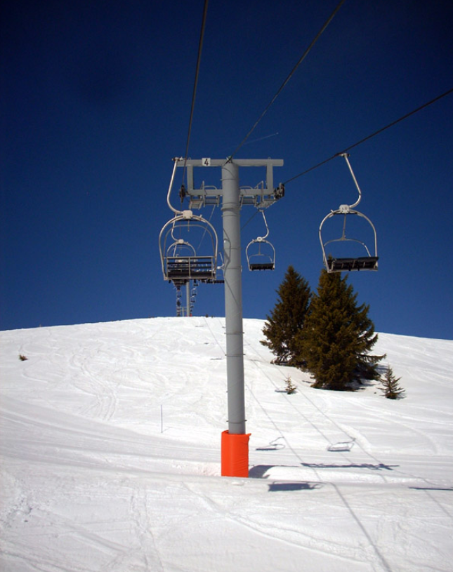
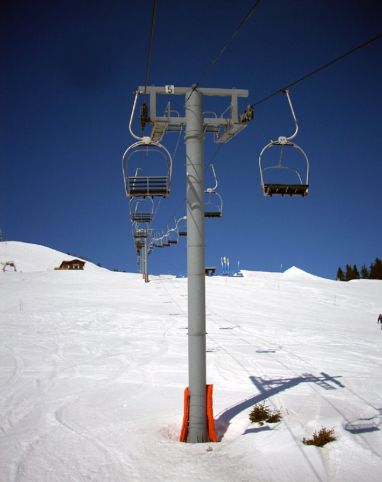
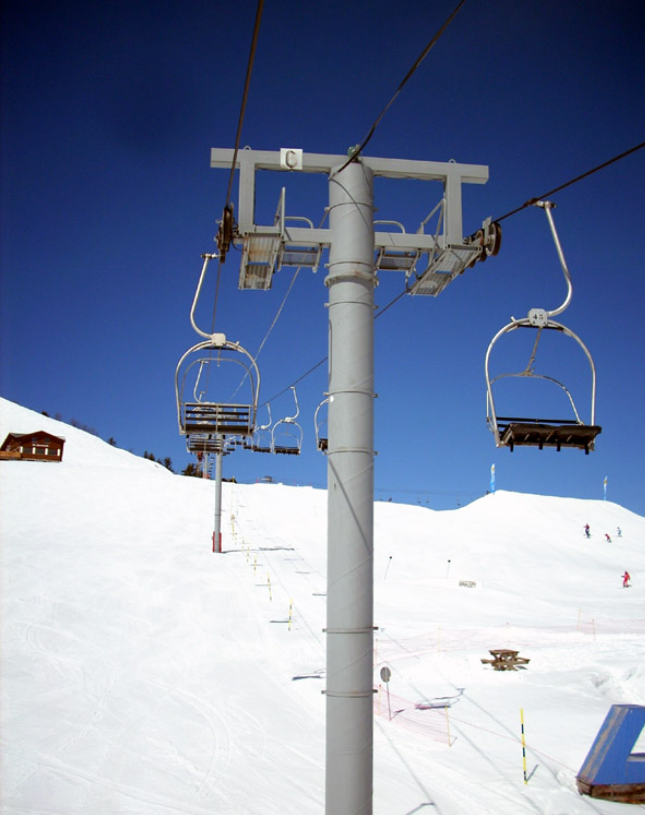
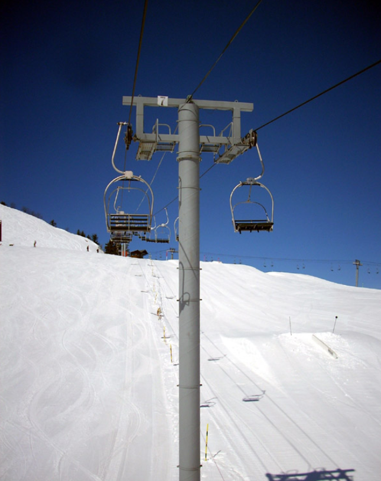
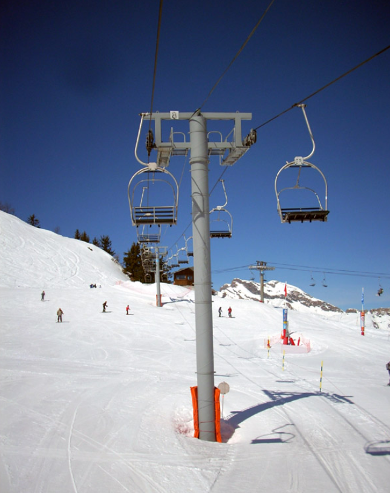
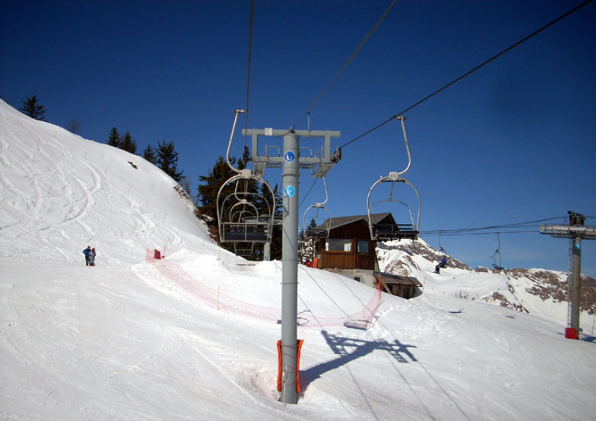
Gare amont
La gare amont du télésiège de la Grande Ourse est de type retour, assurant le débarquement des skieurs à proximité immédiate du restaurant d'altitude La Grande Ourse et du stade de slalom.
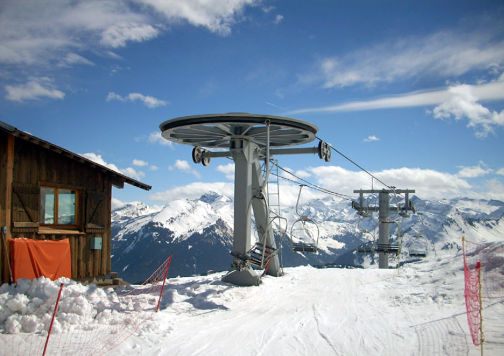
Vue depuis les pistes
Depuis les pistes du secteur, la ligne du télésiège de la Grande Ourse offre plusieurs points de vue sur son tracé et sur le paysage environnant du Mont Chéry.
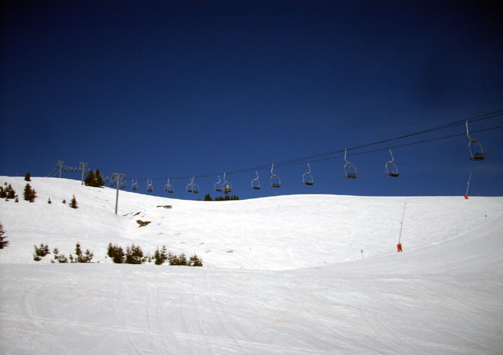
Conclusion
Construit par Montaz Mautino en 1980 dans le cadre de la restructuration du versant du Mont Chéry, le télésiège de la Grande Ourse reste un appareil clé de ce secteur, à la fois pour l'accès aux pistes techniques et au restaurant d'altitude, et pour son usage estival au service des piétons et des vététistes.